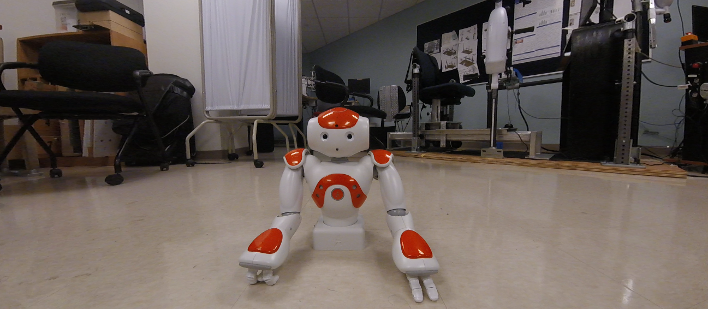
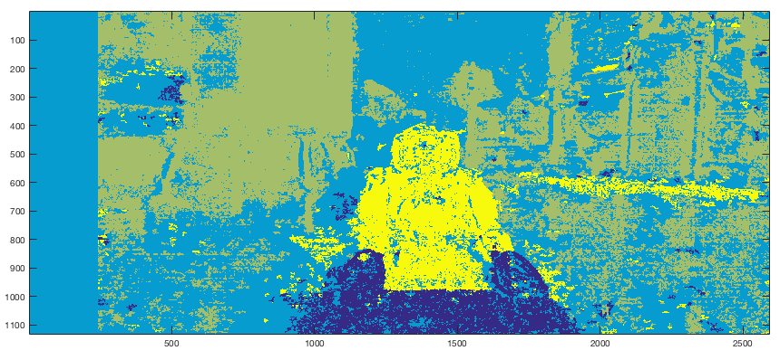
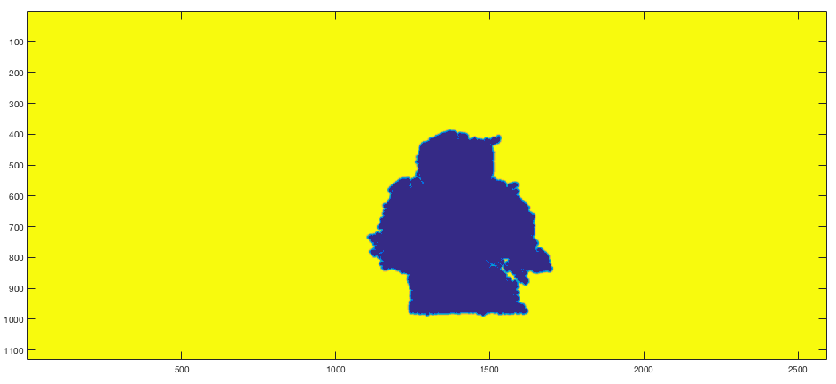

Ever since I heard that the new iPhone was to have two cameras, I've been excited at all the possibilities of having a widely used device with easy to use depth sensing capabilities. I've been working with stereoscopic camera systems for about 6 months now and I believe that even though it isn't a new technology, we'll be seeing a lot more of it in the years to come in different application domains - camera quality improvement, augmented reality, context analysis from everyday images etc.
I'm going to use this blogpost to give you somewhat of a tutorial on how you can do something similar to the Portrait Mode on the iPhone 7 Plus using any stereoscopic camera system you can find. Disclaimer: I put this together in less than two hours therefore this is still a work in progress and nowhere close to as good as the iPhone but it should give you an introduction to how easy it is to perform photomanipulation with the added dimension to your images.
RESULTS:
Images
I'm going to make the assumption that you have already set up a stereo camera system and performed stereo camera calibration. If you are unaware of what any of this means I would recommend reading any material on stereo camera calibration or wait for the more detailed post regarding stereo camera systems that I hope to have ready in a month. This post will deal with the entire stereo camera to 3D reconstruction pipeline.
I quickly put together some data for this,
RECTIFIED LEFT IMAGE: RECTIFIED RIGHT IMAGE:

Disparity Map
Now that we have our left and right image frames rectified, we can use any off the shelf block matching algorithm to generate a map of disparity values from the two images. Essentially what this algorithm does is pick a block of pixel values in the left frame and compare it to a block of pixels in the right frame and generates a value of disparity between the two blocks. Most algorithms today are a lot more sophisticated than this to handle overalapping and reccuring patterns, occlusion etc, but that's the gist of it. This disparity value is a function of the actual depth value associated with each pixel and if you're not trying to accurately measure distances between objects, you don't need to worry about the magnitude of these values. However for those interested in understanding this relation, you can do so using the formula:
Since this entire process is to be automated, tuning parameters for the Semi-Global Block Matching Algorithm isn't really an option. Therefore based on intuition and previous experience with the camera rig, you can hard code a set of parameters that work well for objects within a certain distance from the camera. I believe that in the current version of the iPhone camera there is a recommended distance for the foreground object too. Since I've been using this exact stereo system for other work, I was able to arrive at a reasonably good set of parameters within a few tries. The resulting depth map is shown below. For simplicity sake you can think of the disparity value to be inversely proportial to the actual depth value associated with each pixel. Therefore blue regions indicate lower disparity but greater depths.
DISPARITY MAP:
Region Identification with K-Means
Now that we have a rough approximation of where each pixel exists in 3D space, we can start to group pixels together to form regions. The constraint is to make this process as automated as possible but once again the algorithm that I have chosen requires some hand tuning. I chose to use the K-Means Algorithm on the disparity information. I hard coded a cluster count of 4, which for an image such as this with a single object of interest without nearby objects is quite suitable. For dealing with more cluttered environments a larger cluster count would ensure a more granular region identification.
The output of the K-Means Algorithm is shown below. You can see that the foreground object (Nao Robot) is very easily identifiable but VERY noisy. We will deal with that soon.
REGION SEGMENTATION:

Identifying Foreground
Once each pixel has been assigned to a specific region, identifying the most foreground region is easy. Select the region associated with the highest disparity values and created a mask.
As you can see, the disparity map that we were working with was nowhere close to perfect which is why there is a lot of noise in disparity values. This isn't a big problem though. Using some basic morphological operations we can improve our mask to form less noisy clusters and then identify the largest connected component in the image which is obviously going to be the foreground object/region of interest.
Note that this morphological set of operations was very sloppily put together and more careful and intuitive approaches can be taken to obtain the best possible foreground mask with least edge noise. This step is somewhat of an art so go crazy.
The last step is to extract the largest blob - the object/region of interest using a simple connected component extraction. What you're left with is a mask of only the object/region of interest with some added pixel padding (depending on how many iterations of opening and closing you performed during the morphological operation step).
Results
Now that you've extracted the mask, you can go ahead and use this as a foreground and blur out the rest of our image. But that ends up looking quite shabby at the edges of where the mask ends. While the method suggested here isn't much better than shabby it bears some intuition into how you'd go about developing a smooth transition between foreground and background.
I used the distance transform function on the foreground mask. What this does is give you a distance between each pixel and the edges of the foreground mask. The idea is to use this distance to vary the amount of blurring that occurs at the edges of the foreground to make the transition from foreground to background look less ugly. By applying a distance transform on your foreground mask you should arrive at something similar to this using the Euclidean distance metric.
The next step once again requires tuning to taste. Depending on how much of a gradual fade you desire between the foreground and the background you can tune the thresholds with which you convert the above distance transform map into a interpolation gradient. What I did was normalized the distance transform values between 0 and 1 and used that value to control my alpha composting / alpha blending, where I was basically blending the original image with it's blurred version. The following is the gradient map that I used.

The result of the blending process is shown below,
RESULTS:
While this method does not achieve results close to that of the actual camera I think it's a great tutorial to learn RGB and Depth correspondences in stereo camera imagery. There are many improvements that can be made to this algorithm such as:
I set a hard threshold on the number of depth values I include as foreground. For a more realistic depth of focus you can consider a set of depth values across the foreground region. I believe that the iPhone 7 Plus has 9 levels of depth mapping. This would greatly improve the quality of the foreground background isolation.
While creating the foreground mask, I only used depth values which tend to be VERY noisy with a simple stereo system such as this. Adding additional context can greatly improve the boundaries of the final area of focus. Adding corners, colour or HOG features in addition to the depth foreground mask will smoothen out the corner noise.
There are many other approaches to handling this problem. I hope you enjoyed reading this and I wish that you try it yourself and feel free to contact me with any questions. I wrote this program in Python (openCV) and Matlab. Contact me if you require the source code. However I will be making more improvements to this soon - possibly incoroporating RGB image characteristics to improve my foreground mask such as edges etc.